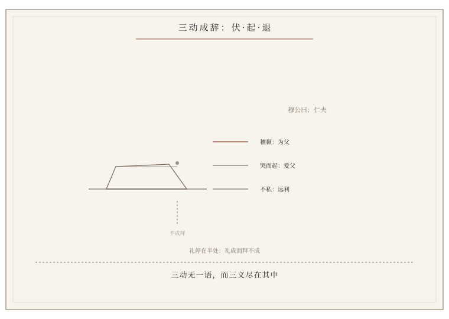

檀弓下 · 四·十二 · 第 337 课
稽颡而不拜，哭而起，起而不私。子显以致命於穆公，穆公曰：「仁夫公子重耳！夫稽颡而不拜，则未为后也，故不成拜。哭而起，则爱父也。起而不私，则远利也。」
说什么事：重耳对秦使只做了三个动作：叩头而不拜谢，哭着起身，起身后不与使者私谈。使者回报，穆公一句「仁夫」。
落在哪一层：以「形」量心。论「三个动作如何成为一份声明」。
为何编在此位：上节舅犯教之以辞，此节重耳行之成礼。教是一句，行是三动。
【经】稽顙而不拜，哭而起，起而不私。
【注】子显以致命於穆公。／使者，公子絷也。卢氏云：「古者名字相配，显当作韅。」／穆公曰：「仁夫公子重耳！夫稽颡而不拜，则未为后也，故不成拜。哭而起，则爱父也。起而不私，则远利也。」
【疏】此穆公本意劝重耳反国，重耳若其为后，则当拜谢其恩，今不受其劝，故不拜谢。穆公以其不拜，故云「未为后」也。／凡丧礼，先稽颡而后拜乃成。今直稽颡而不拜，故云「不成拜」也。／既闻父死劝其反国之义，哀恸而起，若欲攀辕然，故云「哭而起，则爱父也」。／既哭而起，不私与使者，言必无心反国，是「远利」也。／郑注知在翟吊之，及「使者，公子絷」者，并《国语》文。云：「絷吊重耳而退，吊公子夷吾於梁，如吊重耳之命。夷吾见使者，再拜稽首，起而不哭，退而私於公子絷曰：里克与我矣，吾命之以汾阳之田百万……」
稽颡 叩头至地，以额触地。「颡」为额。
不拜 不行拜谢之礼。稽颡与拜为两事，先稽颡后拜，乃成拜礼。
不成拜 礼未成。注「未为后也，故不成拜」：受其劝则当谢，不受则不谢。
起而不私 起身之后，不与使者私下交谈。
子显 即公子絷，秦使。卢氏谓「显当作韅」，名字相配。
远利 远离利益之嫌。
（重耳接待来使）叩头至地而不行拜谢，哭着起身，起身之后不与使者私谈。子显回去向穆公复命。穆公说：「真是仁人啊，公子重耳！叩头不拜，是表明自己不做继承人，所以拜礼不成。哭着起身，是爱他的父亲。起身不私谈，是远离利益。」
全章是一份「动作的读法」。穆公一句一句地把动作译成话：不拜=不为后，哭=爱父，不私=远利。
三个动作，三句译，合起来是一份政治声明：我不做晋君，我只做父亲的儿子，我不谈条件。
而这份声明，没有用一个字。
第一层 礼的最小单位是动作 此章无一语，只三动。而三动各有其义，且义可被读。
礼之所以能为「礼」，正因动作本身能承载意义。稽颡之深、起身之速、是否私谈，皆在动作之内，不在言辞之内。
今人多以为「礼」即客套话。此章反证：最重的表态，往往不说话。
第二层 「不成拜」的分寸 稽颡与拜，本是两事；礼以「先稽颡而后拜」为一成。
今只稽颡不拜，礼便停在半处。此半处，恰是重耳要停的地方：稽颡是为父，拜谢是为己受人之惠。为父者尽，为己者不受。
礼之精微，常在这种「停在半处」：不是不做，是不做完；不是失礼，是以「不成」表态。
第三层 穆公的读法，是政治家的读法 三句译语，皆不涉道德，只述其效：不为后、爱父、远利。
穆公原意要纳重耳，此时反赞其不受。这一赞不是认输，是承认：此人不可用「利」动。
政治家识人，多不看其言，看其「在能得之时如何不得」。重耳三动，正在此关。
第四层 疏引夷吾作反衬 疏引《国语》：絷吊夷吾于梁，命同，而夷吾再拜稽首、起而不哭、退而私于使者，许里克汾阳之田百万、丕郑负蔡之田七十万。
同一份吊辞，两个人两种动作：一拜一不拜，一哭一不哭，一私一不私。三处对上，人便分明。
礼书之记，往往以一人之失衬一人之得。此处衬得极整齐。
第五层 今日之用：不做完的分寸 今人遇「好意裹着条件」之事，或全拒（伤情），或全受（失守）。
此节给的是第三条：接受其礼，不受其意；行到半处，礼便自明。稽颡而不拜，即是此法。拒其条件，而不拒其人。
与今日何干 今日多有「帮忙带着要求」的往来：亲戚资助而附条件，朋友引荐而附期待。全拒则断人情，全受则失自主。此节之法是：把对方的礼受下来，把对方的要求留在门外；礼成而拜不成，则意自别。
| 左 | 右 |
|---|---|
| 稽颡 | 叩头至地，为父 |
| 不拜 | 不受其劝，故不谢 |
| 不成拜 | 礼停在半处 |
| 未为后 | 不为继承人 |
| 哭而起 | 爱父，若欲攀辕 |
| 起而不私 | 不与使者私谈 |
| 远利 | 远离利益之嫌 |
| 仁夫 | 穆公之叹 |
| 夷吾 | 再拜、不哭、私许田 |
画一处庭中，视点平视。一人跪伏于地，额触地，只画背、肩与伏下的头形，不画人面；其身后三尺处另有一人立着，只画衣与袖。两人之间地上画三道平行短线，示「三动」之次：伏、起、退。庭侧留一处空处，示「不私」之地。赭色只用在立者袖口一道。
